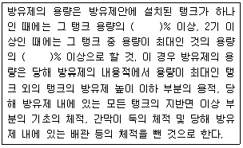
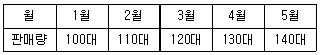
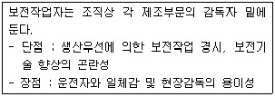
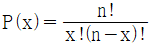
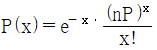
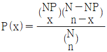
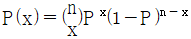
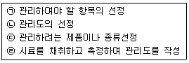

위험물기능장 (2016-07-10 기출문제)
1과목: 임의구분
1. 식용유 화재 시 비누화(saponification)현상(반응)을 통해 소화할 수 있는 분말소화약제는?
- 제1종 분말소화약제
- 제2종 분말소화약제
- 제3종 분말소화약제
- 제4종 분말소화약제
(정답률: 77%)

2. 에테르의 과산화물을 제거하는 시약으로 사용되는 것은?
- KI
- FeSO4
- NH3
- CH3COCH3
(정답률: 76%)
3. 인화성액체위험물(CS2는 제외)을 저장하는 옥외탱크저장소에서 방유제의 용량에 대해 다음 ()안에 알맞은 수치를 차례대로 나열한 것은?

- 50, 100
- 100, 110
- 110, 100
- 110, 110
(정답률: 87%)
4. 위험물안전관리법령상 용기에 수납하는 위험물에 따라 운반용기 외부에 표시하여야 할 주의사항으로 옳지 않은 것은?
- 자연발화성물질-화기엄금 및 공기접촉엄금
- 인화석액체-화기엄금
- 자기반응설물질-화기엄금 및 충격주의
- 산화성액체-화기ㆍ충격주의 및 가연물접촉주의
(정답률: 76%)
5. 금속칼륨 10g을 물에 녹였을 때 이론적으로 발생하는 기체는 약 몇 g인가?
- 0.12g
- 0.26g
- 0.32g
- 0.52g
(정답률: 66%)
6. 위험물안전관리법령상 위험물을 적재할 때에 방수성 덮개를 해야 하는 것은?
- 과산화나트륨
- 염소산칼륨
- 제5류 위험물
- 과산화수소
(정답률: 74%)
7. 위험물안전관리법령상 위험물의 운반에 관한 기준에서 운반용기의 재질로 명시되지 않은 것은?
- 섬유판
- 도자기
- 고무류
- 종이
(정답률: 83%)
8. 위험물안전관리법령상 NH2OH의 지정수량을 옳게 나타낸 것은?
- 10kg
- 50kg
- 100kg
- 200kg
(정답률: 64%)
9. 위험물안전관리법령상 벤조일퍼옥사이드의 화재에 적응성 있는 소화설비는?
- 분말소화설비
- 불활성가스소화설비
- 할로겐화합물소화설비
- 포소화설비
(정답률: 79%)
10. 위험물안전관리법령상 옥내저장소의 저장창고 바닥면적은 1,000m2 이하로 하여야 하는 위험물이 아닌 것은?
- 아염소산염류
- 나트륨
- 금속분
- 과산화수소
(정답률: 62%)
11. 유별을 달리하는 위험물의 혼재기준에서 1개 이하의 다른 유별의 위험물과만 혼재가 가능한 것은? (단, 지정수량이 1/10을 초과하는 경우이다.)
- 제2류
- 제3류
- 제4류
- 제5류
(정답률: 78%)
12. 전기의 부도체이고 황산이나 화약을 만드는 원료로 사용되며, 연소하면 푸른색을 내는 것은?
- 유황
- 적린
- 철분
- 마그네슘
(정답률: 87%)
13. 제3류 위험물에 대한 설명으로 옳지 않은 것은?
- 탄화알루미늄은 물과 반응하여 메탄가스를 발생한다.
- 칼륨은 물과 반응하여 발열반응을 일으키며 수소가스를 발생한다.
- 황린이 공기 중에서 자연발화하여 오황화인이 발생된다.
- 탄화칼슘이 물과 반응하여 발생하는 가스의 연소범위는 약 2.5~81%이다.
(정답률: 78%)
14. 위험물안전관리법령상 위험물 제조소등에 설치하는 소화설비 중 옥내소화전설비에 관한 기준으로 틀린 것은?
- 옥내소화전의 배관은 소화전 설비의 성능에 지장을 주지 않는다면 전용으로 설치하지 않아도 되고 주배관 중 입상관은 직경이 50mm이상이어야 한다.
- 설비의 비상전원은 자가발전설비 또는 축전지설비로 설치하되, 용량은 옥내소화전설비를 45분 이상 유효하게 작동시키는 것이 가능한 것이어야 한다.
- 비상전원으로 사용하는 큐비클식 외의 자가발전설비는 자가발전장치의 주위에 0.6m이상의 공지를 보유하여야 한다.
- 비상전원으로사용하는 축전지설비 중 큐비클식 외의 축전지설비를 동일실에 2개이상 설치하는 경우에는 상호간에 0.5m이상 거리를 두어야 한다.
(정답률: 61%)
15. 위험물안전관리법령상 위험물의 저장ㆍ취급에 관한 공통기준에서 정한 내용으로 틀린 것은?
- 제조소등에 있어서는 허가를 받았거나 신고한 수량 초과 또는 품명 외의 위험물을 저장ㆍ취급하지 말 것
- 위험물을 보호액 중에 보존하는 경우에는 당해 위험물이 보호액으로부터 노출되지 아니하도록 하여야 할 것
- 위험물을 저장ㆍ취급하는 건축물은 위험물의 수량에 따라 차광 또는 환기를 할 것
- 위험물을 용기에 수납하는 경우에는 용기의 파손, 부식, 틈 등이 생기지 않도록 할 것
(정답률: 82%)
16. 위험물안전관리법령상 제2석유류가 아닌 것은?
- 가연성 액체량이 40wt%이면서 인화점이 39℃, 연소점이 65℃인 도료
- 가연성 액체량이 50wt%이면서 인화점이 39℃, 연소점이 65℃인 도료
- 가연성 액체량이 40wt%이면서 인화점이 40℃, 연소점이 65℃인 도료
- 가연성 액체량이 50wt%이면서 인화점이 40℃, 연소점이 65℃인 도료
(정답률: 70%)
17. 탄화칼슘이 물과 반응하면 가연성 가스가 발생한다. 이 때 발생한 가스를 촉매하에서 물과 반응시켰을 때 생성되는 물질은?
- 디에틸에테르
- 에틸아세테이트
- 아세트알데히드
- 산화프로필렌
(정답률: 74%)
18. 위험물의 운반기준에 대한 설명으로 틀린 것은?
- 위험물을 수납한 운반용기가 현저하게 마찰 또는 동요를 일으키지 아니하도록 운반하여야 한다.
- 지정수량 이상의 위험물을 차량으로 운반할 때에는 한 변의 길이가 0.3.m 이상, 다른 한 변은 0.6m 이상인 직사각형 표지판을 설치하여야 한다.
- 위험물의 운반도중 재난발생의 우려가 있는 경우에는 응급조치를 강구하는 동시에 가까운 소방관서 그 밖의 관계기관에 통보하여야 한다.
- 지정수량 이하의 위험물을 차량으로 운반하는 경우 적응성이 있는 소형수동식 소화기를 위험물의 소요단위에 상응하는 능력단위 이상으로 비치하여야 한다.
(정답률: 81%)
19. 수소화리튬에 대한 설명으로 틀린 것은?
- 물과 반응하여 가연성 가스를 발생한다.
- 물보다 가볍다.
- 대량의 저장 용기 중에는 아르곤을 봉입한다.
- 주수소화가 금지되어 있고 이산화탄소 소화기가 적응성이 있다.
(정답률: 73%)
20. 포름산(formic acid)에 대한 설명으로 틀린 것은?
- 화학식은 CH3COOH이다.
- 비중은 약 1.2로 물보다 무겁다.
- 개미산이라고도 한다.
- 융점은 약 8.5℃이다.
(정답률: 77%)
2과목: 임의구분
21. 위험물안전관리법령상 위험물제조소등의 자동화재탐지설비의 설치기준으로 틀린 것은?
- 계단ㆍ경사로ㆍ승강기의 승강로 그 밖의 이와 유사한 장소에 연기감지기를 설치하는 경우에는 자동화재탐지설비의 경계구역이 2이상의 층에 걸칠 수 있다.
- 하나의 경계구역의 면적은 600m2(예외적인 경우에는 1,000m2이하)이하로 하고 광전식 분리형 감지기를 설치하는 경우에는 한변의 길이는 50m이하로 하여야 한다.
- 자동화재탐지설비의 감지기는 지붕 또는 벽의 옥내에 면한 부분에 유효하게 화재의 발생을 감지하도록 설치하여야 한다.
- 자동화재탐지설비에는 비상전원을 설치하여야 한다.
(정답률: 86%)
22. 위험물안전관리법령상 옥내저장소에 6개의 옥외소화전을 설치할 때 필요한 수원의 수량은?
- 28m3 이상
- 39m3 이상
- 54m3 이상
- 81m3 이상
(정답률: 66%)
23. 다음 중 위험물안전관리법령상 압력탱크가 아닌 저장탱크에 위험물을 저장할 때 유지하여야 하는 온도의 기준이 가장 낮은 경우는?
- 디에틸에테르를 옥외저장탱크에 저장하는 경우
- 산화프로필렌을 옥내저장탱크에 저장하는 경우
- 산화프로필렌을 지하저장탱크에 저장하는 경우
- 아세트알데히드를 지하저장탱크에 저장하는 경우
(정답률: 65%)
24. 백색 또는 담황색 고체로 수산화칼륨 용액과 반응하여 포스핀가스를 생성하는 것은?
- 황린
- 트리메틸알루미늄
- 적린
- 유황
(정답률: 70%)
25. 위험물안전관리법령상 옥외탱크저장소에 설치하는 높이가 1m를 넘는 방유제 및 간막이 둑의 안팎에 설치하는 계단 또는 경사로는 약 몇 m마다 설치하여야 하는가?
- 20m
- 30m
- 40m
- 50m
(정답률: 79%)
26. 제4류 위험물 중 제1석유류의 일반적인 특성이 아닌 것은?
- 증기의연소 하한값이 비교적 낮다.
- 대부분 비중이 물보다 작다.
- 다른 석유류보다 화재 시 보일오버나 슬롭오버 현상이 일어나기 쉽다.
- 대부분 증기밀도가 공기보다 크다.
(정답률: 74%)
27. 메탄의 확산 속도 28m/s이고, 같은 조건에서 기체 A의 확산 속도는 14m/s이다. 기체 A의 분자량은 얼마인가?
- 8
- 32
- 64
- 128
(정답률: 62%)
28. 0℃, 0.5기압에서 질산 1mol은 몇 g인가?
- 31.5g
- 63g
- 126g
- 252g
(정답률: 66%)
29. 위험물제조소등의 완공검사의 신청시기에 대한 설명으로 옳은 것은?
- 이동탱크저장소는 이동저장탱크의 제작 전에 신청한다.
- 이송취급소에서 지하에 매설하는 이송배관공사의 경우는 전체의 이송배관 공사를 완료한 후에 신청한다.
- 지하탱크가 있는 제조소등은 당해 지하탱크를 매설한 후에 신청한다.
- 이송취급소에서 하천에 매설하는 이송배관의 공사의 경우에는 이송배관을 매설하기 전에 신청한다.
(정답률: 83%)
30. 위험물제조소 옥외에 있는 위험물취급탱크 용량이 100000L 인 곳의 방유제 용량은 몇 L 이상이어야 하는가?
- 50000
- 90000
- 100000
- 110000
(정답률: 57%)
31. 위험성 평가기법을 정량적 평가기법과 정성적 평가기법으로 구분할 때 다음 중 그 성격이 다른 하나는?
- HAZOP
- FTA
- ETA
- CCA
(정답률: 87%)
32. 위험물안전관리법령상 제5류 위험물에 속하지 않는 것은?
- C3H5(ONO2)3
- C6H2(NO2)3OH
- CH3COOOH
- C3Cl3N3O3
(정답률: 60%)
33. 위험물안전관리법령상 소방공무원경력자가 취급할 수 있는 위험물은?
- 법령에서 정한 모든 위험물
- 제4류 위험물을 제외한 모든 위험물
- 제4류 위험물과 제6류 위험물
- 제4류 위험물
(정답률: 86%)
34. 다음 중 크산토프로테인 반응을 하는 물질은?
- H2O2
- HNO3
- HCIO4
- NH4H2PO4
(정답률: 78%)
35. 트리에틸알루미늄이 물과 반응하였을 때 생성되는 물질은?
- AI(OH)3, C2H2
- AI(OH)3, C2H6
- AI2O3, C2H2
- AI2O3, C2H6
(정답률: 82%)
36. 다음 중 제2류 위험물의 일반적인 성질로 가장 거리가 먼 것은?
- 연소 시 유독성 가스를 발생한다.
- 연소 속도가 빠르다.
- 불이 붙기 쉬운 가연성 물질이다.
- 산소를 함유하고 있지 않은 강한 산화성 물질이다.
(정답률: 84%)
37. 제조소에서 위험물을 취급하는 건축물 그 밖의 시설의 주위에는 그 취급하는 위험물의 최대수량에 따라 보유해야 할 공지가 필요하다. 취급하는 위험물이 지정수량의 10배인 경우 공지의 너비는 몇 미터 이상으로 해야 하는가?
- 3m
- 4m
- 5m
- 10m
(정답률: 73%)
38. 위험물안전관리법령상 주유취급소의 주유원간이대기실의 기준으로 적합하지 않은 것은?
- 불연재료로 할 것
- 바퀴가 부착되지 아니한 고정식일 것
- 차량의 출입 및 주유작업에 장애를 주지 아니하는 위치에 설치할 것
- 주유공지 및 급유공지 외의 장소에 설치하는 것은 바닥면적이 2.5m2 이하일 것
(정답률: 86%)
39. 고분자 중합제품, 합성고무, 포장재 등에 사용되는 제2석유류로서 가열, 햇빛, 유기과산화물에 의해 쉽게 중합 반응하여 점도가 높아져 수지상으로 변화하는 것은?
- 하이드라진
- 스틸렌
- 아세트산
- 모노부틸아민
(정답률: 78%)
40. 다음 정전기에 대한 설명 중 가장 옳은 것은?
- 전기저항이 낮은 액체가 유동하면 정전기를 발생하며 그 정도는 그 액체의 고유저항이 작을수록 대전하기 쉬워 정전기발생의 위험성이 높다.
- 전기저항이 높은 액체가 유동하면 정전기를 발생하며 그 정도는 그 액체의 고유저항이 작을수록 대전하기 쉬워 정전기발생의 위험성이 높다.
- 전기저항이 낮은 액체가 유동하면 정전기를 발생하며 그 정도는 그 액체의 고유저항이 클수록 대전하기 쉬워 정전기발생의 위험성이 높다.
- 전기저항이 높은 액체가 유동하면 정전기를 발생하며 그 정도는 그 액체의 고유저항이 클수록 대전하기 쉬워 정전기발생의 위험성이 높다.
(정답률: 73%)
3과목: 임의구분
41. 모두 액체인 위험물로만 나열된 것은?
- 제3석유류, 특수인화물, 과염소산염류, 과염소산
- 과염소산, 과요오드산, 질산, 과산화수소
- 동식물유류, 과산화수소, 과염소산, 질산
- 염소화이소시아눌산, 특수인화물, 과염소산, 질산
(정답률: 80%)
42. 위험물안전관리법령상 보일러등으로 위험물을 소비하는 일반취급소를 건축물의 다른 부분과 구획하지 않고 설비 단위로 설치하는데 필요한 특례요건이 아닌 것은? (단, 건축물의 옥상에 설치하는 경우는 제외한다.)
- 위험물을 취급하는 설비의 주위에 원칙적으로 너비 3m 이상의 공지를 보유할 것
- 일반취급소에서 취급하는 위험물의 최대수량은 지정수량의 10배 미만일 것
- 보일러, 버너 그 밖에 이와 유사한 장치로 인화점 70℃ 이상의 제4류 위험물을 소비하는 취급일 것
- 일반취급소의 용도로 사용하는 부분의 바닥(설비의 주위에 있는 공지를 포함)에는 집유설비를 설치하고 바닥의 주위에 배수구를 설치할 것
(정답률: 60%)
43. 다음 중 세기성질(intensive property)이 아닌 것은?
- 녹는점
- 밀도
- 인화점
- 부피
(정답률: 82%)
44. 요오드포름 반응이 일어나는 물질과 반응 시 색상을 옳게 나타낸 것은?
- 메탄올, 적색
- 에탄올, 적색
- 메탄올, 노란색
- 에탄올, 노란색
(정답률: 72%)
45. 과염소산 질산, 과산화수소의 공통점이 아닌 것은?
- 다른 물질을 산화시킨다.
- 강산에 속한다.
- 산소를 함유한다.
- 불연성 물질이다.
(정답률: 81%)
46. 위험물안전관리법령상 차량에 적재하여 운반시 차광 또는 방수 덮개를 하지 않아도 되는 위험물은?
- 질산암모늄
- 적린
- 황린
- 이황화탄소
(정답률: 58%)
47. 위험물안전관리법령상 인화성고체는 1기압에서 인화점이 섭씨 몇 도인 고체를 말하는가?
- 20도 미만
- 30도 미만
- 40도 미만
- 50도 미만
(정답률: 82%)
48. 트리클로로실란(Trichlorosilanne)의 위험성에 대한 설명으로 옳지 않은 것은?
- 산화성물질과 접촉하면 폭발적으로 반응한다.
- 물과 심하게 반응하여 부식성의 염산을 생성한다.
- 연소범위가 넓고 인화점이 낮아 위험성이 높다.
- 증기비중이 공기보다 작으므로 높은 곳에 체류해 폭발 가능성이 높다.
(정답률: 72%)
49. 위험물안전관리법령상 주유 캐노피를 설치하려고 할 때의 기준에 해당하지 않는 것은?
- 배관이 캐노피 내부를 통과할 경우에는 1개 이상의 점검구를 설치할 것
- 캐노피 외부의 점검이 곤란한 장소에 배관을 설치하는 경우에는 용접이음으로 할 것
- 캐노피의 면적은 주유취급 바닥면적의 2분의 1이하로 할 것
- 캐노피 외부의 배관이 일광열의 영향을 받을 우려가 있는 경우에는 단열재로 피복할 것
(정답률: 78%)
50. 위험물안전관리법령상 아세트알데히드 이동탱크저장소의 경우 이동저장탱크로부터 아세트알데히드를 꺼낼 때는 동시에 얼마 이하의 압력으로 불활성 기체를 봉입하여야 하는가?
- 20kPa
- 24kPa
- 100kPa
- 200kPa
(정답률: 61%)
51. BaO2에 대한 설명으로 옳지 않은 것은?
- 알칼리토금속의 과산화물 중 가장 불안정하다.
- 가열하면 산소를 분해 방출한다.
- 환원제, 섬유와 혼합하면 발화의 위험이 있다.
- 지정수량이 50kg이고 묽은 산에 녹는다.
(정답률: 77%)
52. 위험물안전관리법령상 제3류 위험물의 종류에 따라 위험물을 수납한 용기에 부착하는 주의사항에 내용에 해당하지 않는 것은?
- 충격주의
- 화기엄금
- 공기접촉엄금
- 물기엄금
(정답률: 75%)
53. 프로판-공기의 혼합기체가 양론비로 반응하여 완전연소 된다고 할 때 혼합기체 중 프로판의 비율은 약 몇 vol%인가? (단, 공기 중 산소는 21vol% 이다.)
- 23.8
- 16.7
- 4.03
- 3.12
(정답률: 53%)
54. 위험물안전관리법령상 옥내저장소에서 글리세린을 수납하는 용기만을 겹쳐 쌓는 경우에 높이는 얼마를 초과할 수 없는가?
- 3m
- 4m
- 5m
- 6m
(정답률: 73%)
55. 표준시간 설정 시 미리 정해진 표를 활용하여 작업자의 동작에 대해 시간을 산정하는 시간연구법에 해당되는 것은?:
- PTS법
- 스톱워치법
- 워크샘플링법
- 실적자료법
(정답률: 76%)
56. 다음 표는 어느 자동차 영업소의 월별 판매실적을 나타낸 것이다. 5개월 단순이동 평균법으로 5월의 수요를 예측하면 몇 대인가?

- 120대
- 130대
- 140대
- 150대
(정답률: 83%)
57. 다음 내용은 설비보전조직에 대한 설명이다. 어떤 조직의 형태에 대한 설명인가?

- 집중보전
- 지역보전
- 부문보전
- 절충보전
(정답률: 74%)
58. 이항분포(binomial distribution)에서 매회 A가 일어나는 확률이 일정한 값 P일 때, n회의 독립시행 중 사상 A가 x회 일어날 확률 P(x)를 구하는 식은? (단, N은 로트의 크기, n은 시료의 크기, P는 로트의 모부적합품률이다.)




(정답률: 71%)
59. 샘플링에 관한 설명으로 틀린 것은?
- 취락 샘플링에서는 취락 간의 차는 적게, 취락 내의 차는 크게 한다.
- 제조공정의 품질특성에 주기적인 변동이 있는 경우 계통 샘플링을 적용하는 것이 좋다.
- 시간적 또는 공간적으로 일정 간격을 두고 샘플링하는 방법을 계통 샘플링이라고 한다.
- 모집단을 몇 개의 층으로 나누어 각 층마다 랜덤하게 시료를 추출하는 것을 층별 샘플링이라고 한다.
(정답률: 62%)
60. 다음은 관리도의 사용 절차를 나타낸 것이다. 관리도의 사용 절차를 순서대로 나열한 것은?

- ㉠→㉡→㉢→㉣
- ㉠→㉢→㉣→㉡
- ㉢→㉠→㉡→㉣
- ㉢→㉣→㉠→㉡
(정답률: 80%)
식용유 화재 시 비누화 반응이 일어나면서 생기는 비누화된 지방산칼륨은 제1종 분말소화약제인 화학제품인 포타슘화합물로서 소화작용을 하기 때문입니다. 제1종 분말소화약제는 물과 함께 사용되며, 물에 잘 녹아 소화작용이 빠르고 강력합니다. 따라서 식용유 화재 시에는 제1종 분말소화약제를 사용하는 것이 적절합니다.